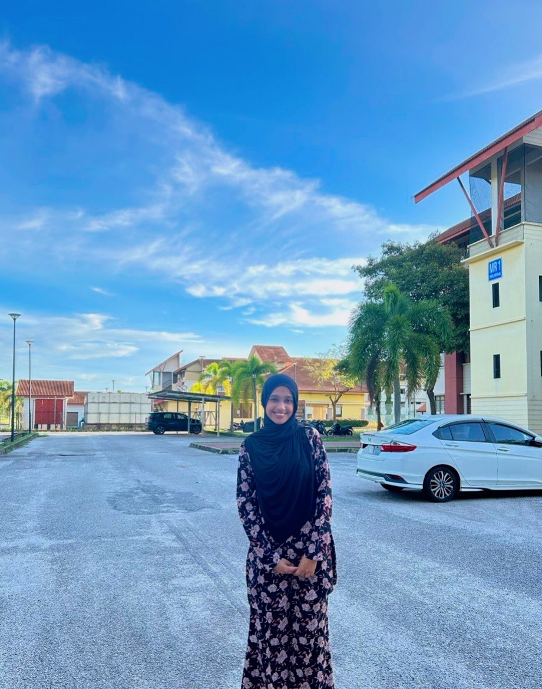
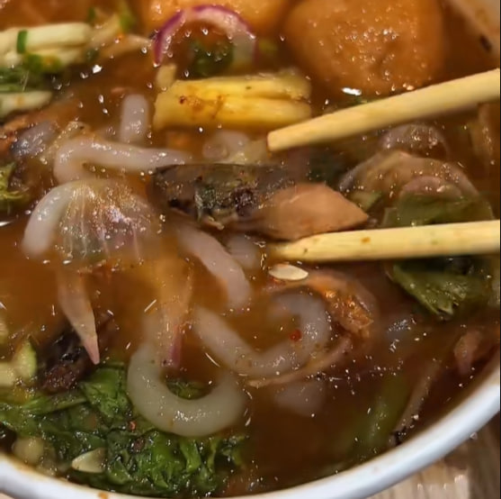
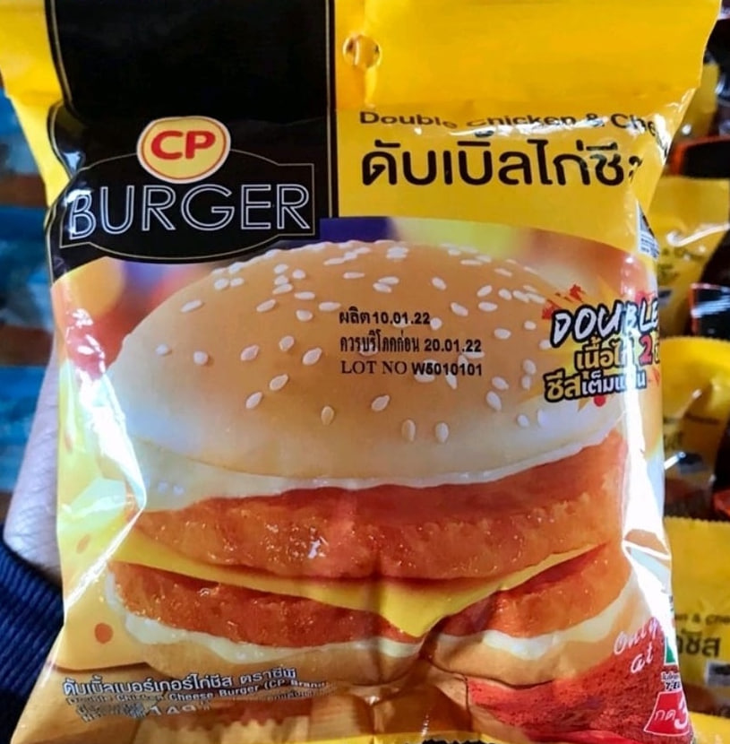
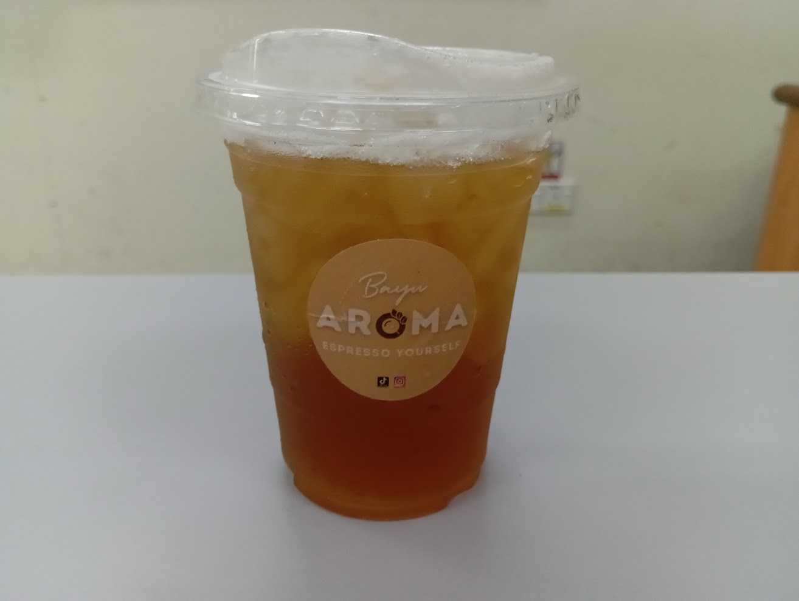

Sahira's Personal Archive 🌷
Greetings cubbies! How are ya? Great? :) or... nah? :( Moving onward, this page will explain a little facts about me, Enjoy! ⋆˚꩜｡/

| Name | Nur Sahira Binti Sayed Abu Bakar |
| Nickname | Sahira |
| Age | 20 Years Old |
| Hometown | Kulim, Kedah |
| Course | Diploma in Library Informatics |
| University | UiTM Kedah |
Apart from the information in table up here, I also want to share to you guys that I love cats ⋆🐾° and the colour of blue!⋆ I am also a big fan of mint chocolate which some of you guys might not like it but it is okay, everyone have their own preference , right? Ouh, not to forget, other than blue colour, I also adore anything that is colourful. They are very pretty and boost my happiness level into max! ⋆˚꩜｡
Hmm...what's more facts about me huh, that I can share with you cubbies? Wait, lemme think for a while---

Aha! I know! My favourite foods and drinks! >⩊< There are so many things I could list if you asked me this question, but I’ll keep it short. I love asam laksa, especially when it is made with glass noodles instead of the white ones. Both are delicious, but I definitely prefer the glass noodles. Both nowadays, I tend to easily lose interest in the foods I used to love. I’m the type of person whose cravings change completely. I could be absolutely obsessed with one specific food this week, but by next month or next year, I’ll be completely sick of it and completely lose interest.

Besides that, I’m a big fan of a burger sold in Thailand called CP Burger. It comes in a variety of flavours, but I’ve only tried the Cheesy Chicken Burger, if I’m not mistaken. All I can say is that it tastes amazing, and for me, it’s one of the best burgers ever!

As for my favourite drinks, they are peach tea, mint chocolate, and mineral water. They’re all great, but peach tea will always be my number one choice. 𖦹 ׂ 𓈒 🥞 ⋆ ۪ I just love it so much! ᯓ★